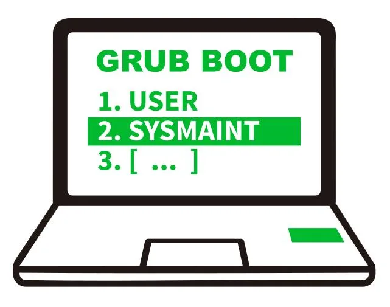

We believe security software like Kicksecure needs to remain Open Source and independent. Would you help sustain and grow the project? Learn more about our 14 year success story and maybe DONATE!
Dev/VirusForgetDesignDev/bootPrevious page: Dev/VirusForgetIndex page: DesignNext page: Dev/bootuser-sysmaint-split
- Default Passwords
- Passwords
- Account Management
- Login
- Login Spoofing
- Safely Use Root Commands
sysmaintAccount- System Maintenance Panel
- Unrestricted Admin Mode
- Protection against Physical Attacks
- User Account Isolation (developers)
user-sysmaint-split (developers)- Polkit (formerly PolicyKit) /
pkexec - privleap /
leaprun

user-sysmaint-split - Role-Based Boot Modes - USER
Session / SYSMAINT Session (system maintenance) and their use cases.
Through user-sysmaint-split as the new default feature in
Kicksecure we introduce new different boot modes, aimed at improving
security through role-based boot options.
Introduction
This page discusses different boot modes in the Kicksecure operating system, aimed at improving security through role-based boot options. It describes modes like "USER Session" for daily activities and "SYSMAINT Session" for updates, software installation, and full system control. The goal is to isolate user activities and reduce security risks by restricting what each boot mode can access and modify. The page also explains opt-outs for users who prefer unrestricted admin mode.
These boot modes are generic and work for both hosts and VMs. This applies to Kicksecure and derivatives of Kicksecure, such as Whonix®.
user-sysmaint-split strenghtens Security-Driven
Design:
- Limited user accounts cannot access privilege escalation tools.
sysmaintsession isolates system maintenance tasks from daily use.- Transitioning between modes enforces a stricter security model.
Development Goals
These goals guide the user/sysmaint isolation implementation:
- Defeat login spoofing
- Prevent Malware from Sniffing the Root Password
- Strong Linux User Account Isolation
- Noexec
- Verified Boot
Grub Default Boot Menu Entries
The default GRUB boot menu entries are:
PERSISTENT Mode | USER Session | daily activitiesPERSISTENT Mode | SYSMAINT Session | system maintenance tasksLIVE Mode | USER Session | disposable useLIVE Mode | SYSMAINT Session | maintenance testing
Use Cases for the Different Boot Modes
Common use cases tailored to the available boot modes:
PERSISTENT Mode | USER Session | daily activities- Ideal for browsing, email, chat, or running a pre-configured server.
- read-only
/usr,/etc. (Planned. Currently inability to elevate to root means that/usrand/etcare still read-write, but normal user accounts can't write anything there due to file permissions. Unclear whether these directories will be ephemerally writable by root or if they will be true read-only, see Challenges with Immutable Filesystems for pros and cons of possible approaches.) - read-write
/home - Verified Boot: enabled. (Planned.)
PERSISTENT Mode | SYSMAINT Session | system maintenance tasks: Allows runningsudo apt install [package], editing/etc/apt/sources.list.d, and similar tasks. Reboot into USER session afterward.- read-write
/usr,/etc,/home - Verified Boot: disabled
- read-write
LIVE Mode | USER Session | disposable use: Similar toPERSISTENT Mode | USER Session | daily activitiesbut without persistence.LIVE Mode | SYSMAINT Session | maintenance testing: Similar toPERSISTENT Mode | SYSMAINT Session | system maintenance tasksbut without persistence.
Boot Modes Comparison Table
Feature |
|
|
|
|
|---|---|---|---|---|
Description |
For daily activities such as browsing, email, chat, or running a pre-configured server. |
Similar to
|
Similar to
|
For system maintenance tasks such as running
|
File System Access: |
No, read-only |
No, read-only |
No, read-only with ephemeral overlay |
Yes, read-write |
File System Access: |
Yes, read-write |
No, read-only with ephemeral overlay |
No, read-only with ephemeral overlay |
Yes, read-write |
Boot with Minimal System Services |
No |
No |
Yes
( |
Yes
( |
Inhibit (Re-)Start of System Services during Upgrades |
No |
No |
Yes |
Yes |
Verified Boot (planned) |
Yes, Enabled |
Yes, Enabled |
No, Disabled |
No, Disabled |
Integration with Verified Boot
When booting into SYSMAINT Session, verified boot will be disabled for the purpose of updates, software installation, and system configuration. During shutdown, the checksums required for verified boot will be created.
When booting into USER Session, verified boot will be enabled for the purpose of improved security.
See also Verified Boot for account user but not for
account sysmaint.
planned: Role-Based Boot Modes
(user versus sysmaint session) has been
implemented already. Verified boot is an additional security feature
that is planned to be implemented later.
Opt-Out to Get the Same Behavior as Old Kicksecure
Users who wish "the old Kicksecure" "with unrestricted
sudo for account user" back, who don't want
the
LIVE Mode | SYSMAINT Session | maintenance testingPERSISTENT Mode | SYSMAINT Session | system maintenance tasks
boot options, could uninstall package
user-sysmaint-split. It could be easily removed using dummy-dependency.
(dummy-dependency is being used to avoid issues with meta package
removal.)
This is documented on the unrestricted admin mode wiki page.
Design
Limited Environment
- Question: Why log in to a limited environment instead of a full desktop?
- Issues: A full desktop environment poses issues
such as:
- Increased attack surface: Systemd units running could provide attack surface (e.g., long-running file downloads/uploads).
- Application exposure: The start menu could offer trivial access to high-risk applications such as web browsers, which could increase risk.
Implementation
- Systemd target:
 Kicksecure/user-sysmaint-split,
a systemd target similar to single user mode (kernel parameter
Kicksecure/user-sysmaint-split,
a systemd target similar to single user mode (kernel parameter
single). - Minimal services: Start only minimal services when
booting into sysmaint session (
sysmaint-boot.target). - Systemd unit: sysmaint-boot.service, handles system reconfiguration when switching between modes.
- Kicksecure/user-sysmaint-split
- Kicksecure/sysmaint-panel
Minimal Services
When booting into sysmaint session, only minimal, hand-picked
services will be started. In other words, far fewer systemd units
(long-running background processes also called daemons)
will be started. This is because when booting into sysmaint session,
only
 Kicksecure/user-sysmaint-split
will be started. This is similar to systemd target single user mode
(kernel parameter
Kicksecure/user-sysmaint-split
will be started. This is similar to systemd target single user mode
(kernel parameter single).
Potentially vulnerable daemons (automatically started as systemd units) such as the past 1-Click Remote Code Execution (RCE) on GNOME (CVE-2023-43641) in file indexing service would not automatically start in sysmaint session, hence reducing the attack surface of sysmaint session.
As per systemd/Debian upstream default, as usual, only
Wants= for services that are actually installed will be
started. For example, Wants=qubes-rootfs-resize.service is
irrelevant in non-Qubes because the
qubes-rootfs-resize.service systemd unit is not
installed.
As opposed when booting into user session,
multi-user.target will be started, where all enabled
systemd units are started as per systemd/Debian upstream default.
No SUID Security Risk originating from Privilege Escalation Tools
Privilege Escalation Tools are SUID applications, which can be a
security risk for local privilege escalation (such as from account
user to root).
Ideally, there should be no SUID binaries reachable from the user account, as otherwise significant extra attack surface inside the VM is exposed (dynamic linker, libc startup, portions of Linux kernel including ELF loader, etc.)Quote security researcher Solar Designer
SUID related risks are elaborated on the SUID Disabler and Permission Hardener wiki page.
This is implemented through No Access to Privilege Escalation Tools for Limited
Accounts. (Note: Not all SUID-root executables have been restricted
yet, however several critical ones such as sudo and
pkexec have been.)
No Access to Privilege Escalation Tools for Limited Accounts
There are conceptually two groups of accounts, privileged accounts and limited accounts.
Privileged accounts:
rootsysmaint
Limited accounts (examples):
usernginxmysqlsdwdatentp- etc.
These limited accounts are by default not a member of the groups
root, sysmaint, or wheel.
Therefore limited Linux accounts such as account "user"
no longer have access to any of the following Privilege Escalation Tools
applications:
sudosudoaspkexec
Prerequisite Knowledge:
- Linux file system permission basics.
owner(u)group(g)others(o) (public)read(r)write(w)execute(x)
Comparison:
Debian: Privilege Escalation Tools (such as
sudo and similar programs) are, as per Debian default,
owned by account root and group root. These
can be read and execute by owner,
group, and others (Public).
(chmod 755) The following chmod-calc command
illustrates this:
chmod-calc /usr/bin/sudo
Permissions for: /usr/bin/sudo
Type: Regular File
Owner: root
Group: root
Octal Permissions: 755
File Size: 281624 bytes
Link Count: 1
Hidden File: No
ACLs: none
Extended Attributes: none
Capabilities: None
Immutable (chattr +i): No
Category Read Write Execute
Owner Yes Yes Yes
Group Yes No Yes
Public Yes No Yes
Special Attributes:
SUID: Set
SGID: Not Set
Sticky Bit: Not Setuser-sysmaint-split: Privilege Escalation Tools are
owned by group sysmaint. others (Public)
(which includes limited account user) no longer have
read or execute rights. (The technical
equivalent of: chown root:sysmaint /usr/bin/sudo;
chmod o-rw /usr/bin/sudo; same for
/bin/sudo)
Group: sysmaint
Category Read Write Execute
Owner Yes Yes Yes
Group Yes No Yes
Public No No NoApplications may no longer internally use passwordless
sudo exceptions (e.g., /etc/sudoers.d). This
is further detailed on the Dev/sudo page.
user group sudo membership
Should user-sysmaint-split postinst
"run_once" sudo delgroup user sudo? No, not
needed.
Limited account "user" can safely safely stay a member
of group sudo by default thanks to No Access to Privilege Escalation Tools for Limited
Accounts. This simplifies testing and the process of users wishing
to go back to unrestricted admin mode.
Qubes Support
Package qubes-core-agent-passwordless-root will be no
longer installed by default in Kicksecure for Qubes.
Qubes R4.2 and earlier
Exiting Templates: user-sysmaint-split is NOT installed
by default for Kicksecure, Whonix-Gateway, or Whonix-Workstation.
New Templates: If user-sysmaint-split is installed into
a template, both the template and AppVMs based on it will only boot into
PERSISTENT mode | USER session. Other boot modes are
inaccessible. For administrative actions, users can use a Qubes Root
Console.
Qubes R4.3 and later
user-sysmaint-split is installed by default for
Kicksecure and Whonix-Workstation. It will NOT be installed on
Whonix-Gateway by default.
By default, Qubes Templates with user-sysmaint-split
installed will boot into
PERSISTENT mode - SYSMAINT session. Administrative tasks
can be done freely in this environment. AppVMs based on these templates
will boot into PERSISTENT mode | USER session by default.
Users can configure this behavior as they desire by using Qube Manager to change VM
boot modes. LIVE mode | USER session and
LIVE mode | SYSMAINT session are both currently
unsupported, but may be supported later.
Qubes Security Known Issue
- Qubes has potential local privilege escalation issue: harden
insecure permissions inside
/dev/xenfolder / research security impact of the Qubes/dev/xenfolder permissions #9717 -- This issue is unspecific to Kicksecure and is entirely unrelated to Kicksecure. It equally applies to App Qubes that are not usingqubes-core-agent-passwordless-rootsuch as Qubes Debian minimal Template.
Remaining Issues
Fast User Switching
sysmaint - System Maintenance User documentation chapter Fast User Switching explains that
It is not possible to switch from account
usertosysmaintusing:
- Start Menu → logout
- Start Menu → switch user
This is a security feature. This mitigates login spoofing attacks and prevents sudo password sniffing.
The best-case potentially realistic scenario for fast user switching
from account user to sysmaint - in theory -
would be:
1 Learn about SysRq.
2
Logout with "save session" as user. This means saving the
session to disk and allowing it to be resumed, but no processes must
continue to run.
3 Use Alt + SysRq + k (Secure Access Key).
4
Log in to sysmaint.
5 Perform system administration.
6
Log out of sysmaint.
7 Use Alt + SysRq + k (optional, just to establish the habit).
8
Resume the user session.
However, even using SysRq to switch from account user to
sysmaint or vice versa would be less secure because when
booting into sysmaint session (sysmaint-boot.target), only
Minimal Services are started.
Server Support
GRUB boot menus aren't easily accessible on many servers. A solution for making these boot modes available on servers is yet to be determined. Booting a server into sysmaint session with minimal services (such as SSH, but not web servers, etc.) might not be practical due to downtimes.
user-sysmaint-split will not be installed by default on
servers. No meta package will depend on it, and derivative-maker will
not install it on server builds.
Future work ideas:
- See the forum discussion: https://forums.whonix.org/t/multiple-boot-modes-for-better-security-persistent-user-live-user-persistent-admin-persistent-superadmin-persistent-recovery-mode/7708/50
- A) User could create a file that requests booting into sysmaint
session next time.
- This file would have to be writable by an unprivileged user, this needs to be done carefully otherwise *any* unprivileged user can DoS the system by writing the sysmaint drop file when the administrator doesn't expect it, thus resulting in the next reboot causing unexpected downtime.
- What users should be able to write the sysmaint boot request file?
Only
user?
- B) Sysmaint mode would use a systemd unit drop-in to disable most systemd units, except SSH, etc.
Usability
- Terminal application risks:
- Ability to run applications like Firefox from the terminal emulator in sysmaint session.
- Documentation access in sysmaint session:
- Why read documentation in sysmaint session?
- Necessary for complex system maintenance tasks.
- For online searches or resolving issues.
- Using AI assistants or posting on forums.
- Why read documentation in sysmaint session?
- Offline documentation:
- Offline documentation is helpful but insufficient since it often links extensively to upstream resources.
- Users are encouraged to refer to online documentation whenever possible (upstream resources).
- Alternatives:
- Separate computer: Ideally, such tasks should be performed on a separate computer.
- Virtual machine (VM): A less ideal but safer option
is to use a VM for such tasks.
- If Verified Boot and A/B updates are implemented, a sandbox feature could be designed to boot the host OS itself in a VM using immutable images, enhancing safety.
Potential Future Improvements
Fast User Switching - Anti Login Spoofing - Anti Phishing Code
- Desktop background as anti-phishing code: The
sysmaintdesktop background could include a user-configurable anti-phishing code. Unlike features rarely offered by banking websites, this would assist users in distinguishing legitimate from spoofed login prompts. - Hard to spoof, easy to verify: A desktop background is difficult for malware to guess and easy for users to recognize subconsciously. A mismatch, such as an unexpected color or image, would immediately signal potential spoofing.
- Weakness of word-based verification: Simple custom anti-phishing words or codes may appear "close enough" during spoofing, making users less likely to notice discrepancies.
- Static protection vulnerability: Anti-phishing words or even
background images are static. A sophisticated adversary could physically
steal this information and later use it in a remote login spoofing attack.
- Alternative using TOTP: The login screen could show a two-factor authentication TOTP code for users to verify. However, requiring TOTP verification every time could be burdensome, and only a subset of users may opt for this higher level of protection.
Rejected Alternative Implementations
- Chroot-based solutions:
- Complex and messy: Involves managing two systems for upgrades.
- Disk mounts challenges: Bootloader upgrades, encryption, LVM, RAID, and other configurations must be handled correctly.
- System updates: Maintaining two systems for updates is difficult.
- Single user mode (kernel parameter
single):- Does not allow login to graphical targets.
- Policy-rcd solutions:
- Start menu restrictions:
- Hide applications like Firefox when booting into sysmaint session.
- Implementation difficulty: Desktop environment-specific changes are required.
- Systray indicator:
- A system tray icon could display a sysmaint symbol to indicate the current mode.
- Warning popups:
- When starting Firefox in sysmaint session, a popup could warn users to avoid browsing the internet unless absolutely necessary.
Boot Menu Names and Ordering
Mode First Ordering
Initial implementation.
PERSISTENT Mode | USER Session | For daily activities
LIVE Mode | USER Session | For disposable use
PERSISTENT Mode | SYSMAINT Session | For maintenance tasks
LIVE Mode | SYSMAINT Session | For maintenance testing
REMOVE sysmaint-user-split | Enable unrestricted admin modeSession First Ordering
Potential future implementation based on user feedback.
USER Session | PERSISTENT Mode | For daily activities
USER Session | LIVE Mode | For disposable use
SYSMAINT Session | PERSISTENT Mode | For maintenance tasks
SYSMAINT Session | LIVE Mode | For maintenance testing
REMOVE sysmaint-user-split | Enable unrestricted admin mode/etc/grub.d
ls -1 /etc/grub.d
00_header
05_debian_theme
10_00_linux_dist
10_10_linux_sysmaint
10_20_linux_live
10_30_linux_remove_sysmaint
10_50_linux_dist_advanced
10_55_linux_sysmaint_advanced
10_60_linux_live_advanced
10_65_linux_remove_sysmaint_advanced
20_linux_xen
30_os-prober
30_uefi-firmware
35_fwupd
40_custom
41_custom
45_debugging
READMESimplified. Relevant files only. Left out "advanced" for simplicity.
10_00_linux_dist
10_10_linux_sysmaint
10_20_linux_live
10_30_linux_remove_sysmaint10_00_linux_dist -> PERSISTENT Mode - User Session
10_10_linux_sysmaint -> PERSISTENT Mode - SYSMAINT Session (executes /etc/grub.d/10_00_linux_dist + options)
10_20_linux_live -> LIVE Mode - USER Session (executes /etc/grub.d/10_20_linux_live + options)
-> LIVE Mode - SYSMAINT Session (executes /etc/grub.d/10_10_linux_sysmaint + options)Boot Modes Considered Too Unimportant to Be Added to GRUB Default Boot Menu
DIY Methods to Include Other Entries in the GRUB Boot Menu
A
Files in the /etc/grub.d/ folder could add entries, but
they could be non-executable by default. To opt-in, users could run
sudo chmod +x /etc/grub.d/somenumber_name-of-boot-mode.
B
Users wanting custom entries can add them directly to the
/etc/grub.d/ folder or GRUB boot menu.
C
Using GRUB boot menu editing (key e) at boot, kernel
parameters can be adjusted for any combination.
Wiki
BootEntries
Code |
Result |
|---|---|
|
|
|
|
|
|
|
|
|
|
|
|
Prior Versions
Older concept version still containing "SUPERADMIN" and "SECUREADMIN".
Tickets
- Create user admin by default and add user admin to group sudo by default
- Selective sudo Access Enabling in VMs Without qubes-core-agent-passwordless-root via qvm-service
Related
- Disable newly (all) installed services by default
- Verified Boot
Forum discussion: AppArmor for Complete System - Including init, PID1, Systemd, Everything! - Full System MAC policyAppArmor for everything: APT, systemd, init, all systemd units, all applications. Mandatory Access Control. Security Hardening.Untrusted Root - Improve Security by Restricting Root- SUID Disabler and Permission Hardener
- Search for SUID SGID
Attribution
Note: Kicksecure
is an Implementation of the Securing Debian Manual.
Specifically the feature you're reading about here is inspired by this
chapter in the manual: Providing
secure user
access